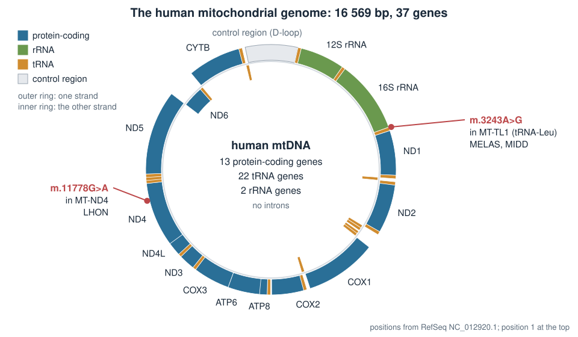
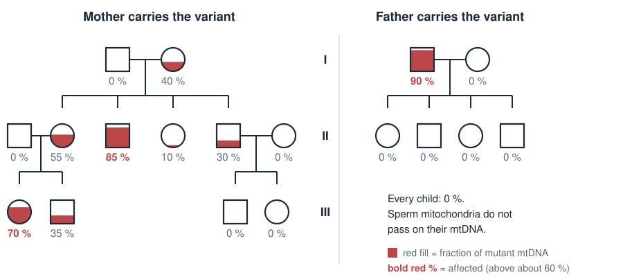
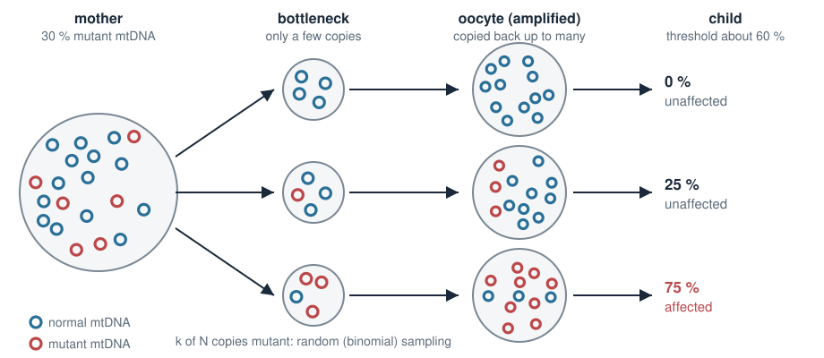
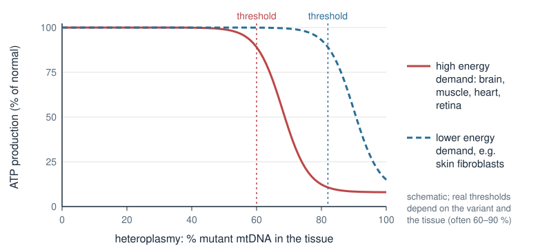
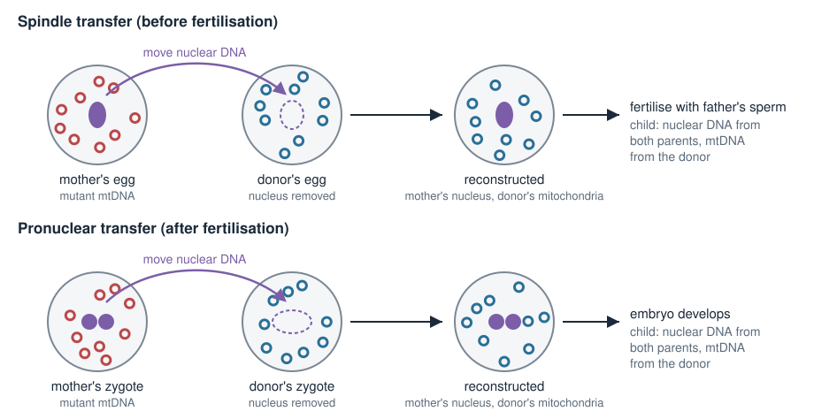

Part 5: Chromosomes in detail. Mitochondrial and chloroplast genomes, maternal inheritance, heteroplasmy and the bottleneck
Basic and molecular genetics (5MO104)
About this lecture
Everything so far in the course has been about genes in the nucleus, which follow Mendel’s laws because meiosis deals out chromosomes fairly. Mitochondria and chloroplasts carry their own small genomes, outside the nucleus, and these follow quite different rules.
The mitochondrial and chloroplast genomes: small, circular, many copies per cell.
Where they came from: endosymbiosis, and the gene transfer to the nucleus that followed.
Maternal (uniparental) inheritance: reciprocal crosses give different results; a nuclear marker as a control.
Heteroplasmy, the bottleneck and the threshold effect: why the children of one mother can be so different, worked out by hand with the binomial.
Telling a mtDNA disease from a nuclear one in a family.
Two human diseases: MELAS (m.3243A>G) and LHON (m.11778G>A).
Mitochondrial donation, and why it raises ethical questions.
Book: Hartwell, Genetics: From Genes to Genomes, organelle inheritance chapter.
Two genomes outside the nucleus
Nuclear genome (human)
mtDNA (human)
cpDNA (Arabidopsis)
Size
about 3 100 Mb
16 569 bp
154 478 bp
Shape
linear chromosomes
circular
circular
Genes
about 20 000 protein-coding
37
about 130
Copies per cell
2 (diploid)
hundreds to thousands
hundreds to thousands
Introns
many
none
some
Inherited from
both parents (Mendel)
mother
mother (in most plants)
Lengths from NCBI RefSeq: human mtDNA NC_012920.1, Arabidopsis thaliana chloroplast NC_000932.1.
Organelle genes are not dealt out by meiosis. They are passed on with the cytoplasm, and the egg supplies almost all of it.
The human mitochondrial genome

13 proteins, all subunits of the respiratory chain and ATP synthase (ND1–6, ND4L, CYTB, COX1–3, ATP6, ATP8); 22 tRNAs and 2 rRNAs to translate them.
Extremely compact: no introns, genes overlap (ATP8/ATP6 by 46 bp), only one larger non-coding region (the control region, or D-loop).
Its own genetic code: UGA is tryptophan, not stop.
Most mitochondrial proteins come from the nucleus
A human mitochondrion contains more than 1000 different proteins. Only 13 are encoded by mtDNA.
All the rest, including the mtDNA polymerase (POLG), the ribosomal proteins and most respiratory chain subunits, are nuclear genes, translated in the cytosol and imported.
Even the chloroplast’s key enzyme is split: Rubisco’s large subunit (rbcL) is in the cpDNA, the small subunit (RBCS) in the nucleus.
Mitochondrial disease caused by…
Inheritance
Example
a variant in mtDNA
maternal, variable (heteroplasmy)
MELAS, LHON
a variant in a nuclear gene for a mitochondrial protein
Mendelian (AR, AD, X-linked)
POLG disorders, many cases of Leigh syndrome
Where organelles came from: endosymbiosis
Mitochondria descend from an alphaproteobacterium, and chloroplasts from a cyanobacterium, each taken up by a host cell more than a billion years ago.
Evidence
Bacteria
Mitochondria and chloroplasts
Genome
one circular chromosome
small circular DNA
Ribosomes
70S, sensitive to e.g. chloramphenicol
bacteria-like, also sensitive
Division
binary fission
divide by fission, not made from scratch
Membranes
inner + outer (Gram-negative)
double membrane
DNA sequence
—
rRNA and protein genes group with alphaproteobacteria / cyanobacteria in phylogenetic trees
Two mitochondria (electron micrograph, mammalian lung): the outer membrane and the folded inner membrane.
Over time, most of the symbiont’s genes moved to the nucleus or were lost. Pieces of mtDNA still land in our chromosomes (NUMTs, nuclear mitochondrial DNA segments).
Maternal inheritance
In humans and most animals:
the egg carries a very large number of mitochondria (and mtDNA copies, of the order of 100 000);
the sperm brings very few, in its midpiece, and they are tagged and destroyed in the early embryo.
So mtDNA comes from the mother, and only women pass it on.
Reciprocal crosses differ. That is the classic test for organelle inheritance:
Cross
Offspring
mutant ♀ × normal ♂
all carry the mutation
normal ♀ × mutant ♂
none do
For nuclear genes, reciprocal crosses give the same result (Mendel, Part 1), except for X-linked genes.
Maternal inheritance in a pedigree

Affected or carrier mother → every child gets the variant, at different levels.
Father → no child, whether the children are sons or daughters.
Both sexes are affected. It looks like neither autosomal nor X-linked inheritance.
Following a nuclear and an organelle gene in one cross
The bread mould Neurospora crassa has a slow-growing mutant, poky, with defective mitochondria (Mitchell and Mitchell, 1952). In a cross, the “female” parent supplies the cytoplasm; the “male” adds little more than a nucleus. The progeny are haploid.
Cross: poky female, ad+ × wild-type male, ad− (ad is a nuclear gene for adenine synthesis)
Gene
Where
Progeny
ad
nucleus
½ ad+ : ½ ad− (Mendel’s first law, in a haploid)
poky
mitochondria
allpoky: they follow the female
The method: put a nuclear marker in the same cross as a control. If the nuclear marker segregates 1 : 1 but the other trait follows one parent in every offspring, and the reciprocal cross gives the opposite, the trait is in the cytoplasm.
Uniparental inheritance in other organisms
Organism
What is inherited
From
Humans, most animals
mtDNA
the mother
Most flowering plants
mtDNA and cpDNA
the mother (seed parent)
Many conifers
cpDNA
the father (pollen)
Chlamydomonas (a green alga, two mating types)
cpDNA / mtDNA
the mt+ parent / the mt− parent
Baker’s yeast
mtDNA
both parents; the mixture then sorts out in the buds
Rare exceptions exist: paternal leakage of mtDNA has been documented in mice and, very rarely, in humans.
The rule is uniparental inheritance, but which parent depends on the organism.
Variegation: Correns and the four-o’clock plant
In 1909 Carl Correns crossed flowers on green, white and variegated (green-and-white) branches of Mirabilis jalapa:
Seed parent: flower on a…
Pollen from any branch gives seedlings that are…
green branch
green
white branch
white (no chlorophyll; they die)
variegated branch
green, white or variegated
The pollen does not matter: the colour follows the seed parent’s branch. Chloroplasts come from the egg.
A variegated plant is heteroplasmic: its cells contain normal and defective chloroplasts. As cells divide, chloroplasts are shared out at random, so some cell lineages end up all-defective (white) and others all-normal (green).
Heteroplasmy and homoplasmy
Homoplasmy: all copies of the organelle genome in a cell (or person) are the same.
Heteroplasmy: a mixture of normal and mutant copies. It is described by the heteroplasmy level, the percentage of mutant copies, e.g. 40 %.
The level is not a fixed property of a person. It differs between tissues, and can change with age, because mtDNA is copied and segregates at random as cells divide (replicative segregation).
With hundreds to thousands of copies, “genotype” is no longer AA, Aa or aa. It is a proportion between 0 and 1.
A blood test can therefore underestimate the level in muscle or brain. For m.3243A>G the level in blood also tends to fall with age.
The mitochondrial bottleneck

During oocyte development, only a small number of mtDNA copies (or segregating units) found the mtDNA of each future egg. They are then copied up to the large number in a mature oocyte.
Each oocyte draws its founders at random: k \sim \text{Binomial}(N, h) mutant copies out of N, so its level is k/N.
Mean level = the mother’s level h; variance= h(1-h)/N. A small N gives a wide spread.
The threshold effect

A cell with some normal mtDNA can usually compensate: function stays near normal until the mutant fraction passes a threshold, then falls steeply.
The threshold depends on the variant and the tissue: tissues with a high energy demand (brain, skeletal and heart muscle, retina) are hit first.
Combined with heteroplasmy, this explains why relatives with the same variant can be healthy, mildly affected or severely affected.
The bottleneck by hand: N = 3
A mother with h = 0.3 (30% mutant). Suppose each egg is founded by N = 3 copies, drawn at random. Each copy is mutant with probability 0.3.
With a threshold of 60%: P(level ≥ 60%) = 0.189 + 0.027 = 0.216. A healthy 30% mother has about a 1 in 5 chance of an egg above the threshold, and a 1 in 3 chance of an egg with no mutant copies at all.
From the mother’s level to the risk for a child
Same mother (h = 0.3), threshold 60%. The exact binomial probability that an egg is at or above 60%:
Bottleneck size N
3
5
10
20
50
200
SD of the egg level (points)
26
21
15
10
6.5
3.2
P(egg ≥ 60%)
0.22
0.16
0.047
0.005
1 × 10−5
≈ 0
The smaller the bottleneck, the wider the spread and the larger the risk. The SD falls as 1/\sqrt{N}.
The risk depends on three numbers: the mother’s level h, the bottleneck N, and the threshold. None is known exactly for a given woman, which is why counselling uses empirical risks from many families.
Try it: the bottleneck
MELAS: m.3243A>G in MT-TL1
MELAS: mitochondrial encephalomyopathy, lactic acidosis and stroke-like episodes.
Most cases carry m.3243A>G, a change in the gene for tRNA-Leu(UUR), MT-TL1. A faulty tRNA affects the translation of all 13 mtDNA-encoded proteins.
Almost always heteroplasmic. The same variant gives a spectrum: from no symptoms, through diabetes and deafness (MIDD, maternally inherited diabetes and deafness), to full MELAS, roughly in order of rising level in affected tissues.
ClinVar: classified Pathogenic, reviewed by an expert panel.
Genetic counselling for a woman who carries m.3243A>G is hard: her own level says little about the level of each child.
Ragged red fibres in a muscle biopsy from a mitochondrial myopathy (Gomori trichrome stain): fibres packed with abnormal mitochondria stain red at their edges.
LHON: m.11778G>A in MT-ND4
Leber hereditary optic neuropathy: sudden, painless loss of central vision in both eyes, usually in young adults.
The most common cause is m.11778G>A in MT-ND4, a subunit of complex I: a missense change, p.Arg340His.
Usually homoplasmic: every child of a carrier mother carries it at about 100 %.
Yet penetrance is incomplete. In families with m.11778G>A only about a third to a half of the maternal relatives lose their sight, and most affected people are male.
So heteroplasmy cannot be the whole story. Other factors, including nuclear genes, sex and environment (for example smoking), decide who becomes ill.
Preventing transmission: mitochondrial donation

The mother’s nuclear DNA is moved into a donor egg (or zygote) whose own nucleus has been removed. The child gets nuclear DNA from both parents and mtDNA from the donor.
Legal in the UK since 2015. In 2025 the Newcastle team reported 8 children born after pronuclear transfer, with no or low levels of the mother’s mtDNA in blood.
A small amount of the mother’s mtDNA is carried over, and could in principle rise again through the bottleneck.
The ethical questions (a germline modification, “three genetic parents”, consent of future generations) are discussed in the Ethics unit.
Mitochondrial or nuclear? Reading a family
Three questions, in this order:
Does a man pass it on? An affected father with an affected child rules out mtDNA: fathers do not transmit it.
Do all children of an affected or carrier mother carry it? For a mtDNA variant: yes, every child carries it, though at different levels, so severity varies.
Does it look Mendelian? Two affected sibs of healthy parents, about ¼ of the sibship, nobody else affected: think of a nuclear, autosomal recessive gene for a mitochondrial protein.
Family
Q1
Q2
Q3
Most likely
A man lost his central vision at 24. Two sons of his sister are affected too; none of his own five children is
no
fits
no
mtDNA (think LHON)
A girl and one of her two brothers have a respiratory chain disease; parents, grandparents, aunts and uncles are healthy
–
–
yes
nuclear, AR: ¼ recurrence
Check yourself: common mistakes
Mistake
Better
“Mitochondrial disease is always maternally inherited.”
Only when the variant is in mtDNA. Most mitochondrial proteins are nuclear, and their diseases follow Mendel.
“A man cannot carry a mtDNA variant.”
He can carry it, and be affected. He just does not pass it on.
“All children of a carrier mother are equally affected.”
They all inherit the variant, but at different levels (bottleneck), so severity varies.
“The bottleneck raises the mutant level.”
On average the level stays at the mother’s h; the bottleneck only spreads it.
“A low level in blood means low risk for the child.”
Levels differ between tissues, and the bottleneck acts on the oocytes.
“Homoplasmic means healthy.”
Homoplasmic for a pathogenic variant (LHON) means all copies are mutant; penetrance decides.
Organelle vs nuclear inheritance
Nuclear genes
Organelle genes
Copies per cell
2
hundreds to thousands
Genotype
AA, Aa, aa
a level between 0 and 100 %
Passed on by
both parents, through meiosis
usually one parent (in humans the mother), with the cytoplasm
Reciprocal crosses
same result (autosomal)
differ
Ratios among offspring
3 : 1, 1 : 1, …
no fixed ratios: a continuous spread of levels
What causes variation among siblings
segregation of two alleles
random sampling at the bottleneck
Recurrence risk
¼, ½, …
depends on the mother’s level, N and the threshold
Summary
Concept
Key fact
mtDNA
16 569 bp, circular, 37 genes (13 proteins, 22 tRNAs, 2 rRNAs); many copies per cell
cpDNA
about 120–160 kb in land plants; about 130 genes
Endosymbiosis
mitochondria from alphaproteobacteria, chloroplasts from cyanobacteria; most genes moved to the nucleus
Maternal inheritance
the egg supplies the mtDNA; reciprocal crosses differ; fathers do not transmit
a mixture of normal and mutant copies; the level differs by tissue and over time
Bottleneck
few copies found each oocyte: level \sim Binomial(N, h)/N, mean h, variance h(1-h)/N
Threshold
symptoms only above a tissue-specific level, often 60–90 %
Risk for a child
P(egg level ≥ threshold): large for small N, falls steeply as N grows
MELAS / LHON
m.3243A>G in MT-TL1 (heteroplasmic) / m.11778G>A in MT-ND4 (homoplasmic, incomplete penetrance)
Nuclear-encoded mito disease
Mendelian inheritance (e.g. POLG)
Where this leads
Exercise and demo: simulate the bottleneck, see the effect of N, and read real records for m.3243A>G and m.11778G>A.
Exercise in R: the same simulation with rbinom and replicate, risk curves with pbinom, and a table of the 37 mtDNA genes from RefSeq.
Part 6, Eukaryotic regulation: X inactivation is another source of mosaicism, like heteroplasmy, but between two whole chromosomes.
Part 7, Drift and selection: random sampling of a finite number of copies is genetic drift. The bottleneck is drift inside one woman’s germline, and the variance formula h(1-h)/N reappears for populations.
Ethics: mitochondrial donation and germline modification.